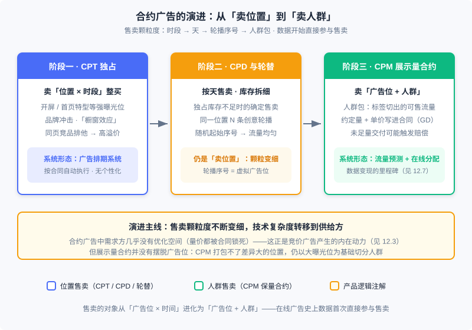
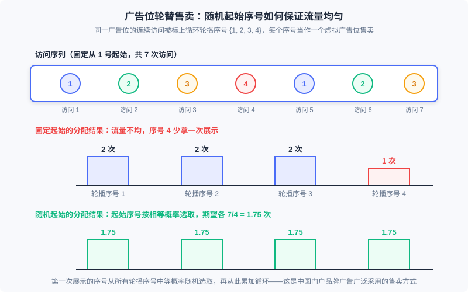

合约广告：产品形态与售卖模式
📝 Before You Continue: 先读 12.1（全景图）——合约广告在生态中的位置；以及 12.7.0（保量广告）——排期系统与防天窗的工程细节已在彼处展开，本章从产品视角切入，不再重复。12.8（受众定向）讲「标签怎么打」，本章讲「标签怎么卖」：两章拼起来才是定向售卖的完整故事。
Part 12 讲到此处，你已经见过竞价市场的全部机关：eCPM 排序、GSP 定价、博弈机制（12.2–12.3）。但在线广告并非生来就是竞价市场。在线广告业务的初始阶段，媒体与广告主的代理商是市场的主要参与者，线下广告的商业逻辑被原样照搬到线上：广告代理公司与媒体签订协议，确保某些广告位在某时间段为指定广告主所占有，费用按整体合同支付。这就是 合约广告——「约定量的展示交付」，量与价都写进合同，而不是交给市场博弈去出清。
理解合约广告不是发思古之幽情。其一，它是整个在线广告产品演进谱系的起点——「先有广告位，后有广告」：最早的商品就是门户网站首页上那几块固定的位置。其二，它至今没有消失：今天头部媒体的品牌专区、开屏合约、CPD 排期，商业逻辑仍是这一套，算法底座就是 12.7 的在线分配。其三，也是最重要的：合约广告演进到「人群售卖」时遭遇的困境，恰恰是竞价广告产生的内在动力——读懂它，你才能真正理解 12.3 那套市场机制为什么长成那个样子。
读完本章，你将能够：
- 区分合约广告的三种售卖形态（CPT 独占、CPD/轮替、CPM 展示量合约）及其各自适配的业务场景
- 解释「从卖位置到卖人群」演进的产品逻辑：数据如何开始直接参与售卖
- 说明为什么卖保量合约之前必须先做流量预测，以及「先分桶聚合再查」的预估思想
- 用保量/保价、排期/实时两对维度对比合约与竞价两种市场的产品逻辑
- 完成 4 道分层练习题
12.12.0 为什么从合约广告讲起：先有广告位，后有广告
把时间拨回互联网广告的蛮荒期。那时的流量还没有被精细刻画的能力——用户是谁、在看什么、想买什么，系统一概不知。能被明码标价的只有两样东西： 位置 （页面上的哪块版面）和 时间 （哪一天、哪个时段）。于是最早的在线广告交易，就是把线下广告的合同照搬过来：某汽车厂商包下门户网站首页的横幅一个月，费用一次性谈定。这就是 CPT 广告位合约，它对技术的依赖性很小，只需要一套简单的 广告排期系统。
随着技术与业务的发展，售卖的标的物沿着一条清晰的路线不断细化：从「位置 × 时段」整买，到按天售卖与轮播拆分，再到「位置 + 人群」的 CPM 展示量合约。每一步细化的驱动力都一样——把流量切得更细，就能卖出更高的总价；而切到「人群」这一步时，数据第一次直接参与售卖，这是在线广告发展史上真正意义上的里程碑。

图里有一条容易被忽略的主线：随着售卖形态演进， 技术复杂度全部压在了供给方（媒体）身上。CPT 时代媒体只需要排期系统照合同自动执行；到了展示量合约，媒体必须预测流量、规划分配、实时决策。而需求方（广告主）在合约广告里几乎没有优化空间——投放的要求都以合约形式交由供给方完成了，量与价都被合同锁死。正是需求方对深入优化效果的进一步需求，催生了按竞价方式售卖的广告系统。这条「供给方技术压力 → 需求方优化诉求 → 交易形态更替」的因果链，是贯穿本章的理解主线。
🧠 Mental Model: 演唱会的两种卖票方式
把广告流量想成一场演唱会的门票。合约广告是包销：主办方提前把一定数量的票按约定价格批发给渠道商，承诺「保证有票」——为此主办方必须提前预估能卖多少票（流量预测），并规划好哪部分看台留给哪个渠道（在线分配）。卖不掉的风险和履约的责任都在主办方。竞价广告是现场售票：开门后价高者得，主办方不用承诺任何人能买到票，价格由供需自动出清。包销模式主办方操心、渠道省心；现场售票主办方省心、买家自担风险。两种模式没有绝对优劣——品牌大客户要确定性，所以至今仍选「包销」；长尾广告主要灵活，所以市场走向「现场售票」。
12.12.1 广告位售卖：CPT、轮替与排期
广告位合约 是最早产生的在线广告售卖方式：媒体和广告主约定在某一时间段内的某些广告位上固定投送该广告主的广告，按 CPT （Cost per Time，典型按天计）结算。它的缺点非常明显——无法按受众投放，也就无法做深入的效果优化。但它在特定场景下至今有可取之处：
- 强曝光位的品牌冲击。在应用开屏、门户首页特型位这类强曝光属性的广告位上，独占式投放能给用户带来有效的品牌冲击；长期独占某些横幅位置，有利于形成「橱窗效应」，持续塑造品牌价值与转化效果。
- 竞品排他的高溢价。独占式售卖可以向广告主提供同页面竞品排他等附加服务，使高溢价的流量变现成为可能——这是竞价市场给不了的确定性。
独占式售卖之外还有一种重要变形： 按广告位轮播售卖。当某个位置的独占库存不够、而广告主又需要确定的展现规则保证时，可以把同一个用户对同一广告位的一系列访问，依次标上一组循环的 轮播顺序号 （如 ），把相同顺序号的展示当作一个 虚拟广告位 卖给广告主。这里有一个精巧的细节：对某个用户而言，第一次展示的顺序号不能固定从 1 开始，而要按相等概率从所有轮播顺序号中随机选取一个，再从此开始累加循环——只有这样，各轮播分到的流量才能一致。这种售卖方式在中国门户网站的品牌广告中被广泛采用。

Analysis: 轮替机制的工程成本极低：服务端（甚至前端脚本）只需维护「用户在该位置已看到的次数」这一计数器，取模定序号即可；唯一的状态是随机起始序号。它的局限也在这里——轮播是按「访问次序」切分流量，不是按「人群」，所以四条轮播创意触达的受众结构完全相同。想要在同一位置对不同人展示不同创意，靠的是受众定向（12.8）的创意差异化，而不是轮替本身。
执行 CPT 售卖的工具是 广告排期系统 ：合同确定后自动按排期投放，代表性产品有 DoubleClick 的 DFP、中国市场上好耶（Allyes）的同类产品，以及免费给中小网站使用的百度广告管家。排期系统并不个性化——素材按事先确定的排期直接插入页面，通过 CDN 加速访问，服务端几乎没有决策压力；工程上唯一值得留意的是混合投放调度与 防天窗 兜底逻辑（动态广告超时或出错时渲染兜底素材，保证广告位永不空白），这套细节已在 12.7.0 展开，此处不再重复。随着受众定向与实时竞价普及，这些排期产品也逐渐演进：叠加动态分配与 RTB 能力后，就接近供给方平台（SSP）了。
还有一个值得留意的中间形态：随着受众定向技术发展，即使某个广告位全部投放一个广告主的创意，也并不意味着投同样的素材。某汽车厂商旗下有小型车、紧凑型车、豪华车、SUV 等多个车系，潜在购买人群差异很大——若能对各车系受众分别投送相应创意，效果会好得多；即便受众无法区分，也可以用频次控制向同一用户递进式展示一系列创意。这类「定向加持的独占合约」在系统实现上与非独占式售卖已没有本质区别，它就是后来程序化直投的产品雏形。
12.12.2 从「卖位置」到「卖人群」：受众定向售卖的出现
CPT 的天花板很快显现：一个首页横幅，独占只能卖一家，轮替也只能拆出几条。可售颗粒度要再细一个量级，就需要新的切分维度——这个维度就是 人群。按 CPM 计费的 展示量合约 由此登场：合同约定某种受众条件下的展示总量与单位展示价格，售卖对象从「广告位」进化为「广告位 + 人群」。因为数据被直接应用到售卖中，媒体第一次实现了在流量变现之上叠加 数据变现 ；这也是「担保式投送（GD）」中「担保」二字的由来——担保的就是这个量，实际执行中未能完成投放量时，可能要求媒体承担赔偿。
这里要先划清一条容易混淆的界线：按 CPM 计费不等于合约广告。CPM 广告还包括另一种不约定展示量的售卖方式（如广告交易市场中的售卖），那种 非保量 CPM 属于竞价广告 ，商业逻辑差别很大。判断合约与否的标准是「是否保量」，不是计费单位。
人群怎么切、切出来的货怎么卖？这有一套与打标签（12.8 的任务）不同的 售卖逻辑 ：
- 售卖目录要为需求方而设计。当标签作为广告投放的直接标的（广告主可以直接选购的人群），标签体系应采用结构化的层级结构——上层标签是下层的父节点、人群覆盖上是包含关系——Yahoo 担保式投送的标签体系（Finance / Travel / Autos / Entertainment 等一级类目）就是典型。反之，标签若只是投放系统的中间变量（如 CTR 预测的输入），就该完全按效果驱动去挖掘，无需层次约束。前者是本章关心的「售卖目录」，后者是 12.8 关心的「打标技术」。
- 地域是最基础的售卖区域。很多广告主业务有区域特性，地域定向是所有在线广告系统都必须支持的选择手段——它计算简单（查表即可），效果虽有限却不可或缺，也是售卖合同里最常见的定向条款。
- 人群覆盖率与标签数量是两回事。 Yahoo 担保式投送市场的行为标签有数千个，但实际产生过销售合约的不过 100 多个——大量精准标签在合约量的束缚下根本无法售卖。评估一个售卖目录，标签种类多少没有太大意义， 标签的人群规模才有说服力 ：人群太小的「货」凑不够保量的最小起投规模，进不了合约目录，只能流向竞价市场。
- 人口属性是品牌合约的硬通货。年龄、性别等人口属性标签效果未必突出，但它们可以被监测（采样加调研即可验证一次投放中受众属性的比例），因此在按 CPM 计费的品牌合约中被广告主接受的程度远高于其他标签。
人群切分带来一个全新的、位置售卖时代不存在的复杂性问题： 人群包之间会交叠。「25–35 岁女性」「女性」「一线城市汽车兴趣人群」——这些可售的货共享同一批底层流量，一份合约的售卖区域与另一份高度重叠时，一次展示可能同时满足多份合约。谁来兑现每一份的承诺量？这就是在线分配问题——它的数学形态与解法（二部图、对偶定价、HWM）是 12.7 整章的主题，本章只需要记住产品侧的结论： 保量承诺 + 人群交叠 = 供给方必须用算法做全局规划 ，这是位置售卖时代从未有过的技术负担。
而展示量合约还有一条常被忽略的边界：它以人群为显式标的，却 并没有摆脱广告位这一标的物。CPM 模式下无法把曝光有效性差别巨大的多个广告位打包成同一售卖标的（否则合理 CPM 无从谈起），实践中展示量合约总是以曝光量很大的广告位为基础再切分人群——视频贴片、门户首页广告位是最典型的载体。这也解释了为什么合约广告的目录总是「宽标签 + 大位置」的组合。
12.12.3 展示合约的流量预估：卖保量之前先算得清账
位置售卖时代不需要预测——位置就摆在那里，卖一天是一天。人群售卖则完全不同：卖出去的是「未来某人群的 次展示」，而人群不是摆在那里的确定库存。于是 流量预测 （traffic forecasting）成为保量售卖的前提性技术：如果流量被严重低估，媒体手里有货不敢卖，资源售卖量不足；如果被严重高估，签出去的合约到期凑不够量，触发赔偿。两头都直接侵蚀收入——售前指导因此成为流量预测在广告产品中的第一个用途。
第二个用途在投放执行侧：各种在线分配算法都要依赖流量预估的结果（12.7 的 里那个供给总量 ，正是流量预测的输出）。第三个用途在竞价侧：广告主出价前想预估「我出这个价能拿到多少流量」，判断出价是否合理。一般的流量预测问题可以表述为对函数 的估计—— 是人群标签组合， 是出价；展示量合约没有竞价环节，相当于 的特例。三个用途对应同一个函数的三个切片，这就是为什么它值得做成一项平台级的基础服务。
工程上的主要困难在于：标签组合的可能性是天文数字，不可能预先统计每一个组合的流量。可行的思路是 先分桶聚合、再按查询组装 ：把历史流量按标签组合聚合成供给节点并建立反向索引（文档是标签组合的流量，查询是广告的定向条件），售卖或分配时用查询取出候选节点、汇总得到预估量。这套「反向索引」方案的具体四步与采样技巧，12.7.2 已经完整展开——此处要带走的是它的产品意义： 流量预测是把「人群」变成可标价、可保量的标准品的那道工序。没有它，合约目录上每一行都是空头支票。
与流量预测配套的还有一个主动手段： 流量塑形 （traffic shaping）。与其被动统计流量，不如主动影响流量以利于合约达成。典型场景是门户网站：各子频道流量严重依赖首页关键位置链接的导流——车展期间汽车频道展示广告需求旺盛，首页就该多给汽车频道导流。这个想法实践中被广泛使用，但要做到系统化、高效率，必须把用户产品与广告产品的供需情况打通，在不伤害用户体验的前提下提升变现效率；这条线索与原生广告（用户产品与商业产品的融合）有千丝万缕的联系。
Analysis: 流量预测的难度随售卖颗粒度细化而陡增：标签越丰富，单个供给节点的流量越收缩，小样本预测的方差越大。这解释了合约售卖目录为什么必须「宽」——也埋下了本章最后一节的伏笔：当市场要求售卖颗粒度细到合约体系撑不住时，交易形态本身就要更替了。
12.12.4 合约广告的产品价值与现代形态
把本章与 12.3 的内容放在一起，两种市场的产品逻辑可以压缩成两对维度：
| 维度 | 合约广告 | 竞价广告 |
|---|---|---|
| 核心承诺 | 保量：约定人群 + 展示量，不足可能赔偿 | 保价：不承诺量，价格由市场出清 |
| 决策时点 | 排期制：离线规划，线上照方案执行 | 实时制：每次展示当场拍卖 |
| 价格形成 | 双方谈判签定，人工媒介采买 | 机制设计（GSP 等）自动定价 |
| 供给方负担 | 重：流量预测 + 在线分配，履约责任在媒体 | 轻：只维护拍卖规则，不用兜底 |
| 需求方空间 | 小：量价锁死，优化空间有限 | 大：出价、定向、创意自主调整 |
| 可容纳的客户 | 少：几千个品牌广告主的量级 | 多：数百万级活跃广告主 |
合约广告并没有被竞价全面取代，因为「确定性」本身是一种商品。品牌广告主要的是排他、是强曝光、是可监测的人群达成率——这些合约给得了，拍卖给不了。今天头部媒体的品牌产品线仍是这套逻辑的延续：品牌专区的独占词条、开屏的 CPD 排期、视频贴片的 CPM 保量合约，合同里写的依然是「人群 + 量 + 价」。变化的只是执行层：算法底座从人工排期升级为 12.7 的在线分配（流量预测 → 紧凑分配方案/HWM → 无状态线上执行），售卖目录的管理也迁移到了程序化直采（PD）等混合形态中。
同样值得记住的是合约的边界。展示量合约在人群标签非常丰富和精准时无法有效运作：标签越多，供给节点按指数速度膨胀，每个节点的流量迅速收缩，预测不再准确，保量承诺也就无从谈起。这个产品级的死结，正是竞价广告的原动力之一——竞价去除了量的约束，让调度变得简单明晰，也使细分流量、容纳海量广告客户成为可能。所以本章的收束句应该是： 合约广告定义了「卖什么」（人群 + 量），竞价广告解决了「怎么卖」（机制出清） ；理解了前者，后者的一切设计才显得事出有因。
最后用一张知识地图把本章收进 Part 12 的坐标系：
| 知识点 | 本章讲到 | 深入之处 |
|---|---|---|
| 排期系统与防天窗 | 产品形态与售卖动机 | 12.7.0（CDN 直投、兜底素材） |
| 定向标签怎么打 | 售卖目录视角：结构化层级、人群规模 | 12.8（上下文/行为/人口属性定向技术） |
| 流量预测怎么算 | 三个用途与「分桶聚合再查」的动机 | 12.7.2（反向索引四步、采样） |
| 保量怎么分配 | 人群交叠问题的由来 | 12.7.1–12.7.5（二部图、对偶、HWM） |
| 竞价为什么出现 | 合约的死结是竞价的动力 | 12.3（机制设计）、12.2（计费与指标） |
⚠️ Common Mistakes in 12.12
| # | Mistake | Example | Why It's Wrong | Fix |
|---|---|---|---|---|
| 1 | 把一切 CPM 广告当成合约广告 | 「ADX 里按 CPM 计费，所以是合约广告」 | 合约与否看是否保量：非保量 CPM（交易市场售卖）属于竞价广告，商业逻辑完全不同 | 用「是否约定展示量、是否承担履约责任」判定，而不是计费单位 |
| 2 | 认为展示量合约已摆脱广告位 | 把曝光有效性差异巨大的多个位置打包成一个 CPM 标的 | 不同位置的合理 CPM 差别巨大，打包后价格无从谈起；实践总以大曝光位为基础切人群 | 售卖目录设计遵循「宽标签 + 大曝光位」组合 |
| 3 | 轮播售卖固定从 1 号起始 | 用户每次访问都从序号 1 开始循环 | 各轮播分到的流量系统性不均，序号 4 的合约实质上被欠量 | 首次展示按相等概率随机选起始序号，再累加循环 |
| 4 | 售前流量预测宁高勿低 | 预测 100 万就敢卖 95 万 | 高估导致合约违约赔偿，低估导致库存贱卖，两头都亏；保量合约的售卖量必须以预测为硬约束 | 售卖量取预测的分位数并留安全余量，超卖部分流向竞价渠道 |
| 5 | 用标签数量宣传售卖能力 | 「我们有 5000 个行为标签可供合约选购」 | 合约量的束缚下，人群过小的标签根本无法售卖；Yahoo 数千标签实际产生合约的只有 100 多个 | 考核标签的人群覆盖率与规模，小标签打包或下放竞价 |
| 6 | 以为合约广告中需求方有优化空间 | 建议品牌合约广告主「实时调价优化 ROI」 | 合约的量与价都签死在合同里，需求方没有可调的旋钮；这恰恰是竞价产生的原因 | 需求方的优化诉求应导向竞价产品（12.3–12.4） |
本章小结
📌 Key Takeaways
| Concept | Key Points | Why It Matters |
|---|---|---|
| 合约广告 | 约定量的展示交付；量价写进合同，履约责任在供给方 | 在线广告产品演进谱系的起点，品牌确定性需求的现代答案 |
| 广告位售卖 | CPT 独占（品牌冲击/竞品排他）→ CPD/轮替（随机起始序号保证流量均匀）→ 排期系统自动执行 | 先有广告位后有广告；排期 + 防天窗至今是广告位容错的标准答案 |
| 受众定向售卖 | 数据首次直接参与售卖；结构化标签体系作售卖目录；地域是基础售卖区域；人群规模比标签数量重要 | 把流量切细卖高价的关键一步，也是流量可标准化的前提 |
| 流量预测 | 售前指导 / 在线分配 / 出价指导三用途； 函数，合约是 特例；先分桶聚合再查询 | 保量售卖的前提工序，没有它合约目录就是空头支票 |
| 合约 vs 竞价 | 保量 vs 保价、排期 vs 实时；标签过细时合约体系崩溃，正是竞价的动力 | 理解 12.3 机制设计「事出有因」的产品史背景 |
❓ FAQ
Q1: 合约广告既然「非主流」，为什么还要花一章学它？
三个理由。第一，它至今承载着品牌广告的确定性需求，头部媒体的品牌合约产品线每天都在跑这套逻辑。第二，它贡献了在线广告的核心技术地基：受众定向、流量预测、在线分配都诞生于保量售卖的压力之下。第三，它是理解竞价广告的对照组——竞价的机制设计解决的是合约体系解决不了的问题，不知道问题是什么，就看不懂解法为什么长那样。
Q2: 轮替售卖为什么要随机起始序号，而不是每个用户都从 1 开始？
轮播是把访问序列按循环序号切成若干条虚拟流量。如果所有用户都从 1 号开始，那么序号 1 永远覆盖每次访问序列的开头几屏（注意力最强），序号 4 只覆盖长会话的尾部——各条流量的量与质都系统性不均，序号 4 的买方实质被欠量。首次展示按相等概率随机选起始序号，才让各轮播在期望上分到相同的流量。
Q3: 展示量合约为什么不直接把所有广告位打包按 CPM 卖，像交易市场那样？
因为 CPM 合约要事先定死单价，而不同广告位的曝光有效性差别巨大，合理 CPM 相应大幅变动，混装打包后价格无从谈起。交易市场之所以能按 CPM 广泛计费，是因为它不保量、每次展示单独竞价定价，价格由市场实时出清——这正是「保量合约困在大曝光位上」与「非保量 CPM 属于竞价」两条结论的共同根源。
🔗 前后关联
- 12.1 （全景与生态）：本章给出合约广告在生态谱系中的起点位置与「先有广告位后有广告」的演进主线
- 12.7 （在线分配与流量管理）：本章只讲保量售卖的产品动机；二部图建模、流量预测的反向索引四步、对偶与 HWM 算法全部在 12.7 展开
- 12.8 （受众定向技术）：本章从售卖目录视角看标签（结构化层级、人群规模）；打标的技术实现（上下文/行为/人口属性）在 12.8
- 12.3 （竞价机制）：合约体系在标签精细化时的死结是竞价产生的原动力；机制设计如何接棒，见 12.3
- 12.2 （计费模式与核心指标）：CPM/CPT 计费口径与 eCPM 的定义是本章售卖形态讨论的度量基础
Practice Problems
Work through all problems in order — they get progressively harder. Each has a complete solution you can reveal after trying it yourself.
Problem 12.12.1 — 轮替售卖的流量均匀性 🟢 Easy
某广告位按 4 条创意轮替售卖，某用户一天内共访问该位置 7 次。(1) 若固定从序号 1 开始循环，各序号各获得多少次展示？(2) 若首次展示按相等概率随机选取起始序号，各序号获得展示次数的期望是多少？
Sample Input: 轮播数 ；访问次数 Sample Output: 固定起始 ；随机起始期望各 次
💡 Solution (click to reveal)
**Approach:** 固定起始时按循环展开数一数；随机起始时用对称性求期望。- 固定起始：访问序列的序号为 ，计数得序号 1/2/3 各 2 次、序号 4 仅 1 次——最少的比最多的少 50%，序号 4 的买方被系统性欠量。
- 随机起始：起始序号在 上等概率选取，由对称性每个序号的期望展示次数都等于 次。
- 一般结论： 不能整除 时固定分配必然不均，随机起始把不均从「系统性偏差」变成「均值为零的随机波动」。
Key points:
- 轮替均匀性靠的是起始序号的随机化，不是访问次数的整除
- 随机起始同时保护了各条流量的「质」：没有哪条轮播总霸占会话开头的高注意力展示
Problem 12.12.2 — 嵌套人群的售卖可行性 🟡 Medium
某媒体首页横幅日流量 1000k 次展示，人群分布：女性 600k（其中 25–40 岁女性 250k、其他女性 350k），男性 400k。当天已排三份合约：A = 女性、300k；B = 25–40 岁女性、250k；C = 全部用户、300k。(1) 总需求 850k < 总供给 1000k，能否据此断言三份合约一定都能完成？(2) 给出一种可行的分配，并指出分配顺序的关键原则。
Sample Input: 供给：25–40 岁女性 250k、其他女性 350k、男性 400k；需求：A 300k、B 250k、C 300k Sample Output: 不能仅凭总量判断；可行分配 ，，，剩余 150k
💡 Solution (click to reveal)
**Approach:** 逐人群核对供需，注意 的人群是 的子集（嵌套关系），分配顺序决定成败。- (1) 不能。总量够不代表结构够：若 先取走 300k 女性（例如取走全部 250k 的 25–40 岁女性再加 50k 其他女性）， 的候选池只剩 0，无法完成 250k 的承诺——这就是 12.7 里「合约间抢占供给节点」的产品语言版本。
- (2) 按「先窄后宽」分配： 取走全部 25–40 岁女性 250k； 从剩余的 350k 其他女性中取 300k； 从剩余流量（50k 其他女性 + 400k 男性 = 450k）中取 300k。三份合约全部足量，剩余 150k 可售给竞价渠道或兜底。
- 原则：嵌套（子集关系）的人群包必须先满足最窄的合约，否则宽合约的分配会挤空窄合约的候选池。12.7 的 HWM 按 排优先级，本质就是把这条直觉自动化。
Key points:
- 保量可行性是结构问题，不是总量问题；人群交叠处的分配顺序是关键
- 售卖目录审核时应显式检查人群包之间的嵌套与交叠关系，并在分配规划中给窄人群更高优先级
Problem 12.12.3 — 流量预测偏差的收入核算 🔴 Hard
某媒体以 CPM 单价 10 元售卖一份 950k 次展示的人群合约。实际到期流量只有 800k，欠量部分按合约价的 20% 赔偿。对照方案：若预测准确，售卖 780k 合约可全部足量交付，剩余 20k 流量以 CPM 6 元在竞价渠道全部售出。计算两种方案的净收入并求差额。
Sample Input: 合约 950k @ ¥10/CPM；实际流量 800k；赔偿率 20%；对照：售 780k @ ¥10/CPM + 剩余 20k @ ¥6/CPM Sample Output: 高估方案净收入 ¥7,700；对照方案 ¥7,920；差额 ¥220
💡 Solution (click to reveal)
**Approach:** CPM 报价按千次展示计费，先把「k 次」换算成「千次单位」再乘单价；两方案分别算毛收入与罚金。- 高估方案：合约按 950k 签单，毛收入 元（计费以实际交付为准： 元）；欠量 k，赔偿 元；净收入 元。
- 对照方案： 元，足量交付无赔偿；剩余 元；合计 元。
- 差额 元。高估多签的量不仅没换成收入，反而吃掉赔偿与机会成本——这就是售前指导（12.12.3）说「流量严重高估会直接影响收入」的定量版本。
Key points:
- CPM 计费基数是实际交付量，签约量与交付量的差才是风险敞口
- 预测偏差的代价是非对称的：高估赔违约金，低估浪费库存，售卖量应取预测的分位数并留余量
Problem 12.12.4 — 设计一份合约售卖目录 🏆 Challenge
你是某媒体合约广告的售卖负责人，日均流量 1000k 次展示，合约售卖要求单标签起投量不低于 50k/天。候选标签的日覆盖流量：女性 600k；25–40 岁女性 250k；汽车兴趣 80k；母婴兴趣 40k；北上广地域 220k；「北上广 ∩ 汽车兴趣 ∩ 安卓」11k。(1) 筛选出可进入合约售卖目录的标签。(2) 对未通过筛选的标签，说明它们应流向哪里，并解释这背后「合约广告在标签精细化时无法运作」的逻辑。(3) 指出目录中两处嵌套关系及分配规划时的注意事项。
Sample Input: 覆盖流量：女性 600k、25–40 岁女性 250k、汽车兴趣 80k、母婴兴趣 40k、北上广 220k、「北上广 ∩ 汽车兴趣 ∩ 安卓」11k；起投量 50k Sample Output: 目录收录 4 个标签：女性、25–40 岁女性、汽车兴趣、北上广；母婴兴趣与三重交叉标签落选
💡 Solution (click to reveal)
**Approach:** 按起投量硬筛，再从人群结构与分配可行性两个维度复核。- (1) 筛选：覆盖率 × 日流量 ≥ 50k 的标签为女性（600k）、25–40 岁女性（250k）、汽车兴趣（80k）、北上广（220k），共 4 个进入目录。
- (2) 母婴兴趣（40k）与「北上广 ∩ 汽车兴趣 ∩ 安卓」（11k）低于起投量。去向：打包进更宽的父标签售卖，或直接下放竞价市场按效果变现。背后的逻辑：标签越细，供给节点按指数速度膨胀、单节点流量迅速收缩，流量小到无法可靠预测时，保量承诺无从兑现——所以合约目录必须保持「宽」，精细化的长尾标签天然属于竞价。这也是 Yahoo 担保式投送市场数千个标签只有 100 多个产生过合约的原因。
- (3) 嵌套关系一：25–40 岁女性 ⊂ 女性；嵌套关系二：汽车兴趣 ∩ 北上广同时是汽车兴趣与北上广的子集（两两交叠）。规划时窄人群先分配（参见 Problem 12.12.2），并对共享候选池的合约做联合可行性校验，避免宽合约挤空窄合约。
Key points:
- 售卖目录的准入线是人群规模，不是标签数量；标签体系应结构化分层以便广告主理解与选购
- 目录设计 = 覆盖率筛选 + 嵌套/交叠结构检查，两步缺一不可
- 长尾标签的正确归宿是竞价市场，这是产品分工而非技术缺陷